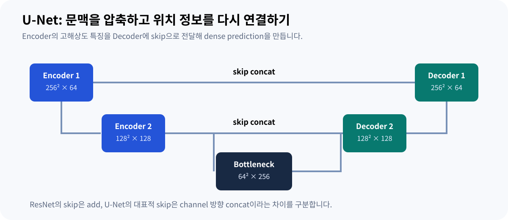

04 · VISION TASKS & U-NET
Vision Tasks와 Segmentation: U-Net까지
분류·탐지·분할의 출력 형식을 구분하고, segmentation의 대표 구조인 U-Net을 같은 주제 안에서 연결합니다.
모델을 고르기 전에 출력부터 정하기
“이 이미지에 불량이 있는가”, “불량이 어디 있는가”, “불량의 경계가 어디인가”는 서로 다른 질문입니다. 먼저 필요한 출력의 형태를 정하면 라벨링 범위와 평가 지표, 후처리를 더 명확히 설계할 수 있습니다.
| 문제 | 출력 예시 | 필요한 정답 |
|---|---|---|
| 분류 (이미지 전체가 어떤 클래스인지 맞히는 문제) Classification | [정상 .10, 결함 .90] | 이미지 전체의 클래스 |
| 탐지 (Object Detection, 객체의 클래스와 위치 상자를 함께 찾는 문제) Object detection | [x₁, y₁, x₂, y₂, score, class] | 물체별 박스와 클래스 |
| 의미 분할 (픽셀 단위로 객체 영역을 구분하는 문제) Semantic segmentation | 픽셀별 클래스 [H, W] | 모든 픽셀의 클래스 |
| 개체 분할 Instance segmentation | 물체별 마스크 [N, H, W] | 각 물체의 클래스·경계·개체 구분 |
예를 들어 3개의 동일 종류 물체가 있을 때 semantic segmentation은 모두 같은 클래스 값으로 표시할 수 있습니다. Instance segmentation은 세 물체를 서로 다른 개체로 구분합니다. 물체 개수를 세거나 개별 경계를 추적하려는 경우 이 차이가 중요합니다.

같은 장면에서 결과를 비교하기
분류에는 위치가 직접 나오지 않습니다. 탐지 박스는 물체를 둘러싸지만 경계 모양을 그대로 표현하지는 않습니다. 마스크는 픽셀 단위 영역을 제공하지만 촬영 해상도·라벨 오차·모델 출력 해상도의 제약을 받습니다.

Backbone · Neck · Head
Backbone은 특징을 추출하는 부분입니다. Neck은 여러 해상도의 특징을 결합하는 부분으로, 항상 별도 모듈로 존재하는 것은 아닙니다. Head는 목적에 맞는 최종 출력을 만듭니다. 같은 backbone도 head와 학습 목표에 따라 다른 문제에 사용할 수 있습니다.
학습 중 출력은 바로 최종 박스 목록이 아닐 수 있습니다. 모델별 출력 해석, 좌표 변환, confidence 필터, 필요시 NMS (Non-Maximum Suppression, 겹치는 검출 상자 중 중복 후보를 제거하는 후처리) 등의 후처리를 거쳐 사용 가능한 결과가 됩니다. NMS가 필요한지와 score의 정의는 모델 버전과 구현마다 확인해야 합니다.
겹친 정도를 수치로 표현하기
예측 영역 120픽셀, 정답 영역 100픽셀, 교집합 80픽셀이라면 합집합은 140픽셀입니다. IoU는 80/140≈0.571, Dice는 160/220≈0.727입니다. 같은 두 이진 마스크를 비교할 때 Dice = 2IoU/(1+IoU)의 관계가 있습니다.
경계 위치가 중요하면 전체 IoU (Intersection over Union, 예측 영역과 정답 영역의 교집합을 합집합으로 나눈 값) 하나만으로 충분하지 않을 수 있습니다. 작은 관심영역과 경계 오차를 함께 확인하되, 평가 ROI와 기준은 결과를 보기 전에 정해야 합니다.
Segmentation에서는 왜 encoder–decoder가 필요한가?
분류는 이미지 전체를 하나의 vector로 요약해도 되지만 segmentation은 픽셀 위치를 보존하며 class를 예측해야 합니다. Downsampling은 넓은 context를 얻는 데 유리하지만 세밀한 위치 정보가 줄어들 수 있습니다. 따라서 dense prediction에서는 낮은 해상도의 semantic feature와 높은 해상도의 spatial feature를 어떻게 결합하는지가 중요한 설계 문제가 됩니다.

U-Net 논문: context와 localization을 함께 연결하기

Ronneberger et al.의 U-Net은 contracting path에서 context를 추출하고 symmetric expanding path에서 해상도를 복원합니다. Encoder (해상도를 줄이며 context feature를 추출하는 경로)의 고해상도 feature를 decoder (해상도를 복원하며 dense prediction을 만드는 경로)로 전달하는 skip connection (encoder feature를 decoder로 전달하는 연결)은 세밀한 위치 정보를 다시 활용하게 합니다.
| 단계 | 예시 shape | 역할 |
|---|---|---|
| Decoder upsample | [B,128,128,128] | 깊은 feature의 공간 해상도를 복원 |
| Encoder skip | [B,128,128,128] | 같은 scale의 고해상도 feature |
| Concat, dim=1 | [B,256,128,128] | 공간 위치를 맞춘 뒤 channel 방향 결합 |
| Conv block | [B,128,128,128] | 결합한 feature를 학습해 다음 representation 생성 |
원 U-Net은 encoder feature를 decoder feature와 concatenate합니다. 대표 ResNet block은 identity/projection branch를 main branch와 add합니다.
원 U-Net과 현대 same-padding 구현을 구분하기
2015년 원 U-Net은 unpadded 3 × 3 convolution을 사용하므로 convolution을 지날 때 공간 크기가 줄어듭니다. 논문 Figure 1의 대표 흐름은 572 × 572 input에서 388 × 388 output을 만들며, encoder feature를 decoder에 연결할 때 crop이 필요합니다.
| 항목 | 2015 원 논문 | 많이 쓰이는 현대 구현 |
|---|---|---|
| 3×3 Conv | valid / unpadded | same padding을 쓰는 경우가 많음 |
| 입출력 크기 | 572 → 388 예시 | 입출력 공간 크기를 같게 유지하기도 함 |
| Skip | crop 후 concatenate | 동일 spatial size에서 concatenate |
| 손실 | weighted pixel-wise softmax loss | CE, Dice 계열 등 다양한 선택 |
따라서 “U-Net은 항상 same padding”이나 “U-Net의 원래 loss가 Dice loss”라고 설명하면 부정확합니다. Dice 계열 loss는 이후 segmentation 실무에서 널리 사용되지만 원 논문의 핵심 손실과 구분해야 합니다.
U-Net 논문의 문제 설정과 한계
원 논문은 생의학 영상 segmentation에서 제한된 수의 annotated image를 효율적으로 사용하기 위해 강한 data augmentation과 encoder–decoder 구조를 제안했습니다. 이 결과를 모든 자연영상·산업영상 segmentation에서 동일하게 보장되는 성능으로 해석해서는 안 됩니다.
산업 영상에서는 작은 defect의 pixel 크기, downsampling 비율, boundary label 품질, class imbalance, inference resolution을 별도로 검토해야 합니다. U-Net은 segmentation architecture를 이해하는 대표 사례이지 모든 segmentation 문제의 기본 정답은 아닙니다.
출처와 더 확인할 자료
본문은 이해를 위한 한국어 해설입니다. 도식은 직접 재구성했으며, 가상 수치와 단순화한 구조는 해당 위치에 표시했습니다.
- Ultralytics · Tasks ↗분류·탐지·분할의 지원 태스크와 입출력 사용법입니다.
- COCO · Detection evaluation ↗IoU 임계값과 평균 정밀도 평가 정의를 확인할 수 있습니다.
- Ronneberger et al. · U-Net (U-shaped Network, encoder와 decoder를 대칭적으로 연결한 segmentation architecture): Convolutional Networks for Biomedical Image Segmentation ↗2015 U-Net의 contracting/expanding path, crop-and-concat, augmentation과 원 손실의 근거입니다.
- U-Net 저자 프로젝트 페이지 ↗원 논문의 코드·자료가 연결된 저자 측 페이지입니다.